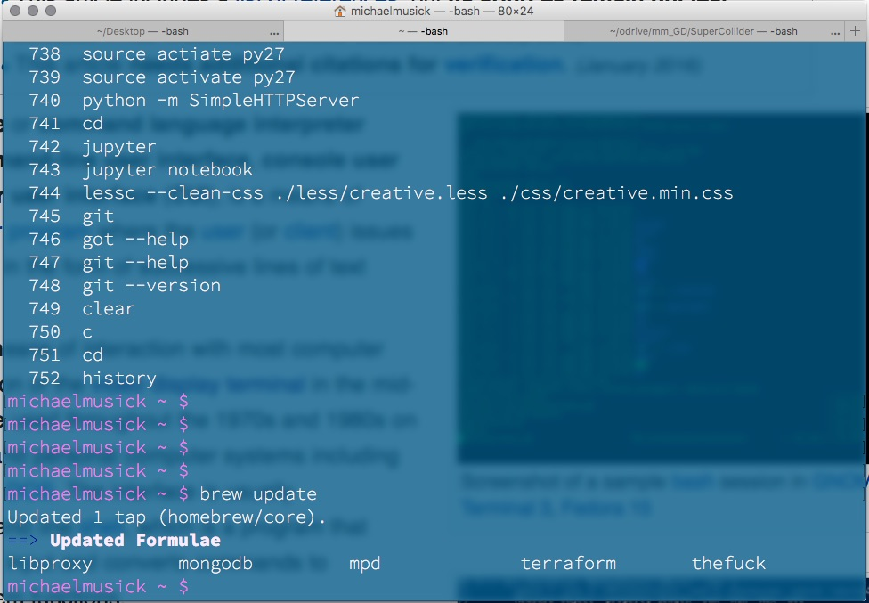

As a creative technologist and developer you will need to take control of your computer. You should start to consider your computer as an instrument or creative tool that serves as an extension of yourself.
This means you need to be comfortable with your computer and know your computer.
One of the most basic ways of working with your computer is through a command-line interface (CLI). 
Although such programs can appear intimidating to a beginner user, these command line programs remove are simple applications that allow for detailed control of the OS. These programs allow a user to accomplish many of that same tasks that they are used to completing with a mouse, through text only commands. One reason to use such a program is that it can speed up the development process and also display more information than is typical of a traditional “graphical user interface” (GUI; pronounced ‘gooey’) based environment.
One advantage of a CLI over a GUI-based file browser is quicker manipulation of files and directories. The manipulation of files and directories will be a very common activity for you in this course. As such, please take a moment to read the following Wikipedia page describing ‘directories’ and make sure you understand what a directory is, as well as its related terminology.
Unix operating systems refer to both macOS (formerly OS X) and Linux. These OS’s will use similar commands within their CLI’s. On macOS, the default CLI is terminal.app. However, there are many CLI’s that can be downloaded and used in unix-based operating systems.
For those of you who are unfamiliar with using the terminal in unix operating systems, you should work through following book.
This resource walks you through the basics of using terminal via a ‘cutesy’ story. (Sorry if this is not your thing. Unfortunately, it is a very good resource.)
NOTE: If you do not have Xcode.app installed on your Mac, you should do so. We will not be using Xcode, however, it installs additional command line tools which we will use. Xcode can be installed via the Mac App Store. After installing Xcode, open it once, then close it and forget about it for the time being.
Windows has utilized a program known as Command Prompt for decades. This program is a relative of MS-DOS, an early operating system and precursor to Windows. In recent years there has been a move within the development community towards Windows newer PowerShell.
You can launch PowerShell console by pressing Windows key, typing PowerShell, and clicking on Windows PowerShell.
If you are unfamiliar with using PowerShell on Windows, please work through the following resource.
and watch the following video:
Before moving on this week, you should ensure you are comfortable with the following;